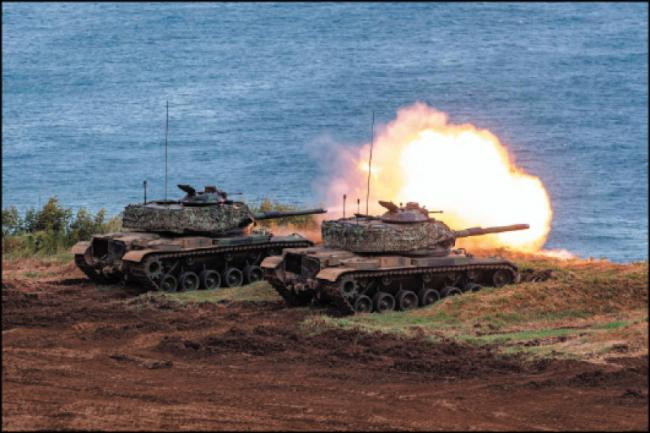

在台湾今年的总统选举之前，三位主要候选人赖清德、侯友宜和柯文哲一致表示，支持将台湾的国防预算提高至国内生产总值（GDP）的三%。 此一目标可以追溯到陈水扁政府时期。 然而，对于那些担心台湾未能全力强化自身防卫的外国支持者来说，这个GDP占比已经不足以因应所需，也不能让他们放心。
外国支持者忧心 台湾未全力强化自卫
陈水扁在2000年当选总统时，台湾的国防开支占GDP的比例，已经连续数十年下降。 瑞典智库斯德哥尔摩国际和平研究所（SIPRI）的数据显示，当美国在1980年退出《中美共同防御条约》时，台湾的国防预算占GDP的比例为7.3%。 或许有点令人意外的是，在台湾失去美国这个唯一的盟友后，这个比例并未上升。 不过，在整个1980年代和1990年代的大部分时间里，台湾经济持续成长之余，中国人民解放军并未对台湾的安全构成重大威胁。 台湾不仅能够提高国防预算，同时也能将其不断扩大的国家资源，投入到其他优先事务上。
而随着台湾转型为民主国家，要求削减国防开支的压力也愈来愈大。 这是自然现象，因为政治人物面临选举的竞争压力，政府也必须更迅速地对选民的需求做出回应。 在整个1990年代，国防支出在国家总预算中的比例，从16.5%降至8.2%。
遗憾的是，对台湾而言，这种资源的重新优先配置，正值中国积极展开军事现代化之际。 在1996年的台湾海峡危机后，北京记取了深刻的教训：一旦台海爆发危机，中国人民解放军几乎无法阻止美国的干预。 解放军只不过是一只纸老虎。
二○○○年代初期 两岸军力开始失衡
到了2000年代初期，台北和华盛顿都愈来愈意识到，两岸军事力量的平衡开始向中国倾斜——虽然速度很缓慢。 在这种情况下，陈水扁总统承诺将国防支出的目标订为GDP的3%。 此后的每一任总统都接受这个目标。 可是，没有一个人做到。
解放军积极扩充军备 台湾未跟上脚步
廿年前，将国防预算订为GDP的3%是合理的。 当时，中国的军事现代化才刚起步，台湾的军事实力仍优于解放军，美国在印度—太平洋地区也保有无可争议的军事优势。 然而，过去20年来，这种优势已经每况愈下。 台湾没有跟上解放军扩充军备的脚步，而且解放军现在甚至可以严重影响美军在西太平洋的行动能力。
中国威胁严峻 台湾应该提高军费目标
年复一年，台湾面临日益严峻的生存威胁，却仍然坚持20年前的国防开支目标—以我们现在所知道的情况来看，这个目标在当时可能已经不足，而且在这些年里，没有任何一位总统曾经接近达成这个目标。
值得称许的是，台湾在最近几年持续增加国防支出。 二○二二年，国防预算占政府总预算的比例达到13.6%，为1996年以来的最高水平。 可是，这仅仅相当于台湾GDP的2%，只会加深美国一些人对台湾没有认真看待中国威胁的担忧。
由于台湾一直未能实现GDP占比3%的目标，解放军已经取得上风。 事实上，即使台湾现在达成这个目标，不仅太少，也为时已晚。 台湾的领导者早就应该拟定一个更高的支出目标—台湾在1990年代初期的GDP占比5%，是一个相当不错的起点—并且确实兑现。
台湾是一个拥有工业化经济的富裕发达国家，有能力投注更多资源以捍卫自身安全，尤其是当另一种选择是让自己处于被全面并吞的危险之中时。
（作者马明汉为2049计划研究所资深主任，也是全球台湾研究中心的非常驻资深研究员。 国际新闻中心陈泓达译）

台湾在最近几年持续增加国防支出。 二○二二年，国防预算占政府总预算的比例达到13.6%，为1996年以来的最高水平。 可是，这仅仅相当于台湾GDP的二%，只会加深美国一些人对台湾没有认真看待中国威胁的担忧。 （资料照）